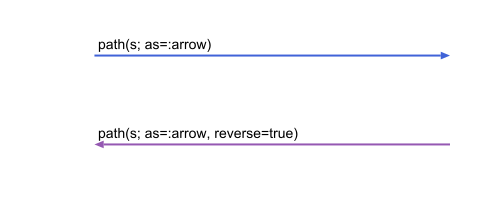
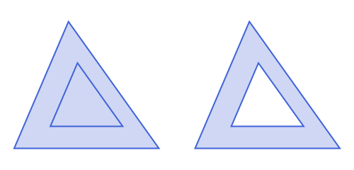
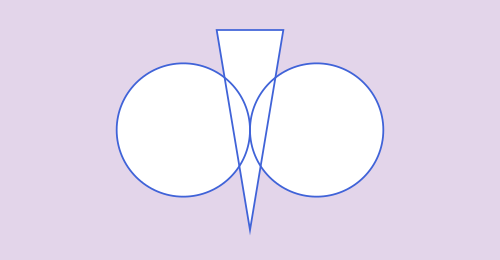
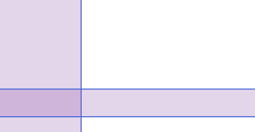
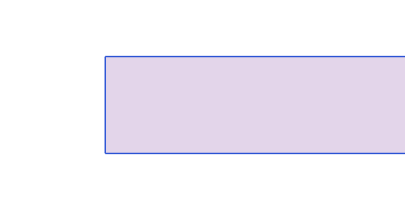
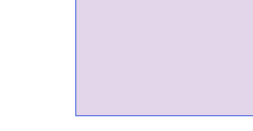
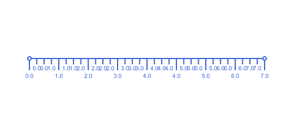
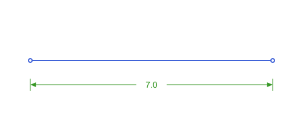

Drawing: Clipping, Dimensions & Reversing
Reversing a path
Every path method for a curve takes reverse::Bool=false: the very same points, traversed backwards. It matters wherever the direction of travel shows: which end an arrow points to, where a dash pattern starts, and how subpaths combine under a fill rule.
seg = APSegment(APPoint(-80.0, 0.0), APPoint(80.0, 0.0))
path(seg; as=:arrow) # the head is at seg.p2
path(seg; as=:arrow, reverse=true) # the head is at seg.p1
arc = APCircularArc2(APCircle2(APPoint(0.0, 0.0), 60.0), APPoint(60.0, 0.0), APPoint(0.0, 60.0))
setdash("dash")
path(arc; action=:stroke) # the dashes start at arc.p1
path(arc; reverse=true, action=:stroke) # the same arc, dashes starting at arc.p2

See script
using Apollonius, Luxor
import Apollonius: translate
import Luxor: julia_red, julia_blue, julia_green, julia_purple
lxm = @prepare_to_picture! flip=false width=500 height=240 margin=20 begin
ta1 = APTriangle(APPoint(-80.0, 60.0), APPoint(80.0, 60.0), APPoint(-20.0, -80.0))
ca = circumcenter(ta1)
ta2 = homothety(ta1, 1/2, ca)
tb1, cb, tb2 = translate.([ta1, ca, ta2], APVector(200.0, 0))
end
begin
Drawing(lxm.width, lxm.height, :svg)
origin()
sethue(julia_blue)
@layer begin
setopacity(0.25)
path([ta1])
path(ta2)
fillpath()
path(tb1)
path(tb2, reverse=true) #see fill-rule on Luxor doc.
fillpath()
end
path([ta1, ta2, tb1, tb2], action=:stroke)
finish()
preview()
endreverse(obj) builds a new object. For a circular or elliptic arc that object is the complementary arc, the rest of the circle. path(arc; reverse=true) draws the same arc, from the other end.
The keyword also exists on APPoint (a point has no direction, so it is ignored), so path(v; reverse=true) works on a Vector that mixes points with curves; it is forwarded to every element, without reversing the order of the elements.
Clipping the outside
path(obj; action=:clip) restricts later drawing to the inside of obj. clip_out(obj) restricts it to the outside, which is what lunes, arbelos and "a circle minus two circles" figures need. It works on anything path draws as a closed shape (a circle, an ellipse, a polygon or curved region, a bounding box, or an angle's marker wrapped as APCircularSector2/ APQuadrilateral, see Marks, Labels & Decorations), and without approximating any arc.
APHalfPlane2, APStrip2, APAngle2 (as=:region) and APUnboundedPolygon2 have no closed path to give either way (see "Filling an unbounded region" below): both path(region; action=:clip) and clip_out(region) work on them too, restricting drawing to the inside or the outside of the same bound-sized box the fill uses.
@layer begin
clip_out(APCircle2(APPoint(-50.0, 0.0), 30.0))
clip_out(APCircle2(APPoint(50.0, 0.0), 30.0)) # a second call narrows it further
sethue("red")
paint() # everything except the two discs
endThe same idea with two discs and a triangle, shading everything else:

See script
using Apollonius, Luxor
import Luxor: julia_red, julia_blue, julia_green, julia_purple
import Apollonius: rotate, translate, distance, midpoint
lxm = @prepare_to_picture! width=500 height=260 margin=30 begin
shapes = [APCircle2(APPoint(0.0, 0.0), 2.0), APCircle2(APPoint(4.0, 0.0), 2.0), APTriangle(APPoint(1.0, 3.0), APPoint(3.0, 3.0), APPoint(2.0, -3.0))]
end
begin
Drawing(lxm.width, lxm.height, :svg)
origin()
gsave()
clip_out(shapes)
sethue(julia_purple); setopacity(0.25)
Luxor.paint()
grestore()
sethue(julia_blue)
path(shapes, action=:stroke)
finish()
preview()
endTwo calls keep what is outside both shapes, and a Vector argument does the same in one call, one clip per element. Like any Luxor clip, it lasts until clipreset() or the end of the enclosing @layer, so wrap it.
Internally it clips the region between a big box and the shape, using Luxor's even-odd fill rule. The box has half-side bound (default 1e5), centered on the current origin, so raise bound if you have translated the origin far from the drawing.
Both clip_out and path(obj; action=:clip) last until clipreset() or the end of the enclosing @layer. Everything drawn after them is clipped, including the labels, so wrap the clip in a @layer and draw the rest outside it.
Filling an unbounded region
APHalfPlane2, APStrip2 and APUnboundedPolygon2 have no finite shape to fill: path(obj; action=:fill) used to draw nothing at all for them, since their ordinary path is just the boundary line(s), with zero area. It now fills the part of obj inside a square of half-side bound (default 1000.0) centered on the current origin instead, the same big-box idea clip_out already uses, just filling the box's intersection with obj rather than clipping it out. action=:fillstroke also strokes the true boundary, not the square's edges:
hp = APHalfPlane2(APLine(APPoint(-2.0, -5.0), APPoint(-2.0, 5.0)), APPoint(-10.0, 0.0))
s = APStrip2(APLine(APPoint(0.0, -6.0), APPoint(8.0, -6.0)), APLine(APPoint(0.0, -3.0), APPoint(8.0, -3.0)))
sethue(julia_purple); setopacity(0.25)
path(hp; action=:fill)
path(s; action=:fill)
See script
using Apollonius, Luxor
import Luxor: julia_red, julia_blue, julia_green, julia_purple
import Apollonius: rotate, translate, distance, midpoint
lxm = @prepare_to_picture! width=500 height=260 margin=30 begin
p1, p2 = APPoint(-2.0, -5.0), APPoint(-2.0, 5.0)
l = APLine(p1, p2)
hp = APHalfPlane2(l, APPoint(-10.0, 0.0))
p3, p4 = APPoint(0.0, -6.0), APPoint(8.0, -6.0)
p5, p6 = APPoint(0.0, -3.0), APPoint(8.0, -3.0)
l1 = APLine(p3, p4)
l2 = APLine(p5, p6)
s = APStrip2(l1, l2)
end
begin
Drawing(lxm.width, lxm.height, :svg)
origin()
sethue(julia_purple); setopacity(0.25)
path(hp; action=:fill, bound=1000.0)
path(s; action=:fill, bound=1000.0)
setopacity(1.0)
sethue(julia_blue)
path(hp; action=:stroke, extend=1000.0)
path(s; action=:stroke, extend=1000.0)
finish()
preview()
endAn APUnboundedPolygon2 (see Unbounded Regions: Half-Planes, Strips & Angles) fills the same way, its mix of rays and segments closing off a shape that's bounded on some sides and open on others:
u = APUnboundedPolygon2(APRay(APPoint(0.0, 3.0), APPoint(1.0, 3.0)), APPoint{2,Float64}[], APRay(APPoint(0.0, 0.0), APPoint(1.0, 0.0)))
sethue(julia_purple); setopacity(0.25)
path(u; action=:fill)
See script
using Apollonius, Luxor
import Luxor: julia_red, julia_blue, julia_green, julia_purple
import Apollonius: rotate, translate, distance, midpoint
lxm = @prepare_to_picture! width=500 height=260 margin=30 begin
p1, p2 = APPoint(0.0, 3.0), APPoint(1.0, 3.0)
p3, p4 = APPoint(0.0, 0.0), APPoint(1.0, 0.0)
ray1 = APRay(p1, p2)
ray2 = APRay(p3, p4)
u = APUnboundedPolygon2(ray1, APPoint{2,Float64}[], ray2)
corner1, corner2 = APPoint(-2.0, -1.0), APPoint(8.0, 4.0)
end
begin
Drawing(lxm.width, lxm.height, :svg)
origin()
sethue(julia_purple); setopacity(0.25)
path(u; action=:fill, bound=1000.0)
setopacity(1.0)
sethue(julia_blue)
path(u; action=:stroke, extend=1000.0)
finish()
preview()
endAPAngle2 gets this as a new as=:region option (alongside its own as=:rays; the decorative vertex markers, a small arc/pie-wedge/corner marker regardless of action, live in marks instead, see Marks, Labels & Decorations): it fills the true infinite wedge, not a marker near the vertex:
ang = APAngle2(APPoint(0.0, 0.0), APPoint(4.0, 0.0), APPoint(0.0, 4.0))
sethue(julia_purple); setopacity(0.25)
path(ang; as=:region, action=:fill)
See script
using Apollonius, Luxor
import Luxor: julia_red, julia_blue, julia_green, julia_purple
import Apollonius: rotate, translate, distance, midpoint
lxm = @prepare_to_picture! width=500 height=260 margin=30 begin
vertex, a, b = APPoint(0.0, 0.0), APPoint(4.0, 0.0), APPoint(0.0, 4.0)
ang = APAngle2(vertex, a, b)
end
begin
Drawing(lxm.width, lxm.height, :svg)
origin()
sethue(julia_purple); setopacity(0.25)
path(ang; as=:region, action=:fill, bound=1000.0)
setopacity(1.0)
sethue(julia_blue)
path(ang; as=:region, action=:stroke, bound=1000.0)
finish()
preview()
endA reflex angle correctly fills as two pieces (everything except the small excluded wedge), the same way it can come back as two pieces from intersection:
reflex = APAngle2(APPoint(0.0, 0.0), APPoint(0.0, 4.0), APPoint(4.0, 0.0))
sethue(julia_purple); setopacity(0.25)
path(reflex; as=:region, action=:fill)See script
using Apollonius, Luxor
import Luxor: julia_red, julia_blue, julia_green, julia_purple
import Apollonius: rotate, translate, distance, midpoint
lxm = @prepare_to_picture! width=500 height=260 margin=30 begin
vertex, a, b = APPoint(0.0, 0.0), APPoint(0.0, 4.0), APPoint(4.0, 0.0)
reflex = APAngle2(vertex, a, b)
end
begin
Drawing(lxm.width, lxm.height, :svg)
origin()
sethue(julia_purple); setopacity(0.25)
path(reflex; as=:region, action=:fill, bound=1000.0)
setopacity(1.0)
sethue(julia_blue)
path(reflex; as=:region, action=:stroke, bound=1000.0)
finish()
preview()
endas=:region with action in :path/:stroke/:strokepreserve draws the same two true rays as as=:rays, and raise bound the same way clip_out suggests if the origin has moved far from the drawing.
action=:clip works the same way as :fill, restricting later drawing to the region's part of the box instead of painting it, and clip_out does the opposite, restricting to everything outside it (see "Clipping the outside" above):
@layer begin
path(hp; action=:clip)
sethue(julia_purple); setopacity(0.25)
paint() # only the part of hp inside the box gets painted
endDimensions, tick lines and labels
Three Luxor functions come with methods for APPoints, the same way label does, so you never convert by hand.
| Call | What it does |
|---|---|
Luxor.label(text, alignment, p; kwargs...) | Luxor's label at an APPoint. alignment is a compass symbol (:N, :SE, ...) or an angle. |
Luxor.text(text, p; halign, valign, angle, direction, upright) | Luxor's text at an APPoint. Unlike label it can turn the text: angle and direction take a number in radians, or a vector, line, ray or segment to run the text along. |
Luxor.dimension(p1, p2; kwargs...), Luxor.dimension(segment; kwargs...) | the dimension line for the distance between two points, with extension lines, two arrowheads and the measured text. Drawn immediately; returns (distance, text). |
Luxor.tickline(p1, p2; kwargs...) | a line with ticks and numbers between two points. Returns the tick positions (major, minor) as vectors of APPoint; with vertices=true it draws nothing and only returns them. |
The keywords go straight to Luxor (offset, format, major, minor, startnumber, and so on); see Luxor's own documentation for them. One thing worth knowing from there: dimension expects p1 to be the point lower on the page, that is with the larger y.
d, text = Luxor.dimension(APPoint(-80.0, 60.0), APPoint(80.0, 60.0); offset=15) # (160.0, "160.0")
major, minor = Luxor.tickline(APPoint(-100.0, 0.0), APPoint(100.0, 0.0);
major=4, minor=1, vertices=true) # positions only
path(major; radius=2, action=:fill) # draw them as dotsDrawn immediately (vertices=false, the default), tickline adds its own major/minor ticks and numbers along the way:
Luxor.tickline(a, b; major=7, minor=3, startnumber=0, finishnumber=7, rounding=0)
The measured text is the distance between the two points you pass, so on a canvas it is a length in pixels. Use format to show the value in your own units, and textrotation=-pi/2 to keep the text upright on a horizontal dimension line (Luxor rotates it with the line by default):
Luxor.dimension(a, b; offset=40, format=d -> "7.0", textrotation=-pi / 2, textgap=25)
label also takes a LaTeXString as the text once LaTeXStrings and MathTeXEngine are loaded (Luxor draws it with its own LaTeX support), so a label can be a formula:
using LaTeXStrings, MathTeXEngine
label(L"\alpha^2 + \beta_1", :N, APPoint(0.0, 0.0))To choose where a label goes and how it is aligned, see label_anchor on the Marks, Labels & Decorations page.
The text is the distance between the two points, in the units of those points. On fitted objects that is a length in drawing units, not in the units of your problem. Use format to show the value you mean, and textrotation=-pi / 2 to keep the text upright on a horizontal line.